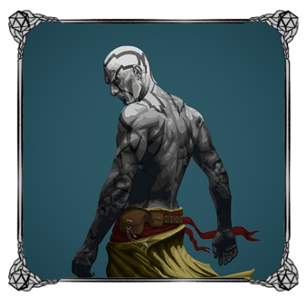
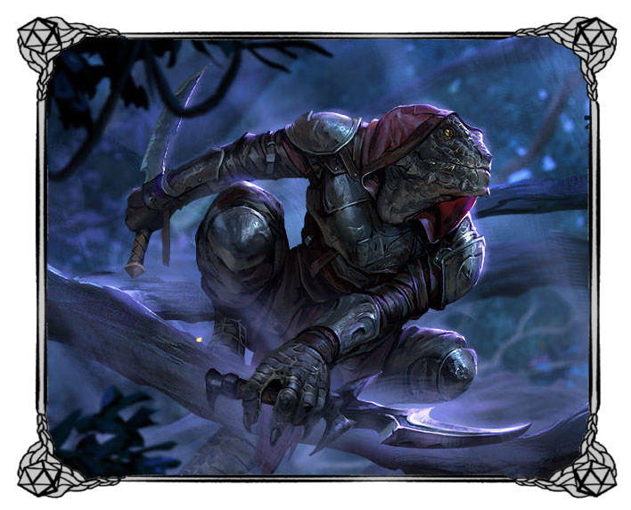
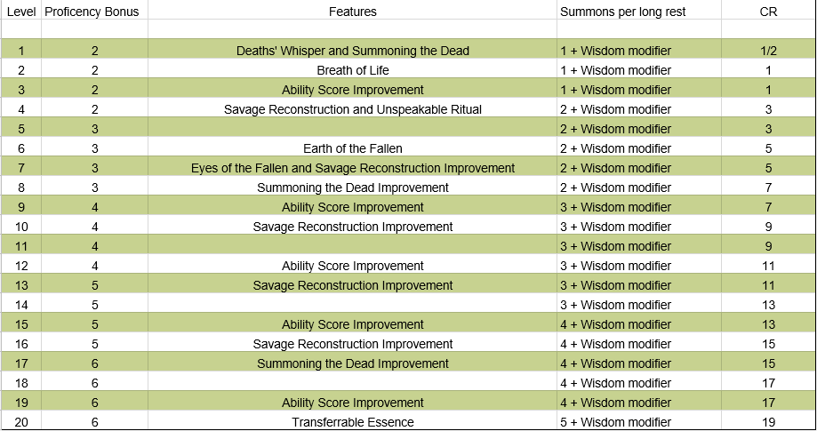
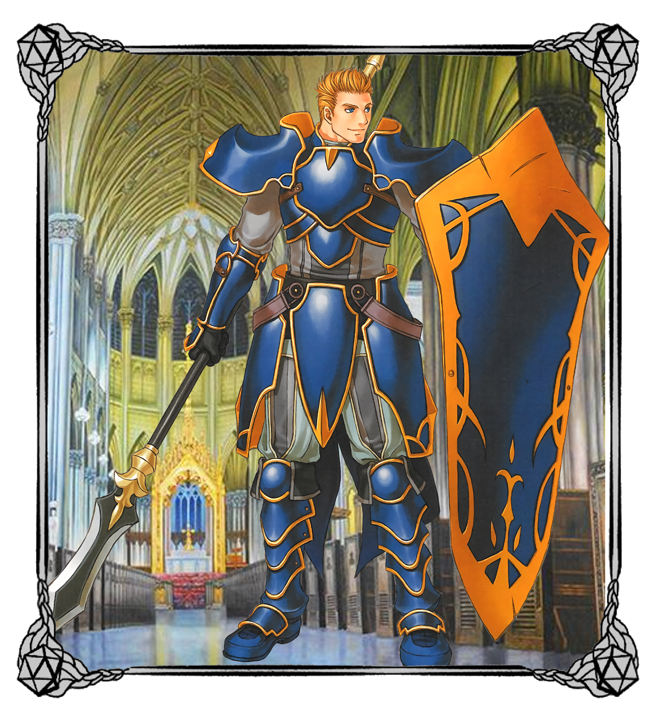

Aeleeri
Origins

Aeleer Maidens are disciples of the Sun Goddess Aeleer. They perform many duties around their places of worship, arguably the most important being the delivery of Aeleeri children. Aeleeri are created when a child is born in a shrine to Aeleer, delivered, baptised, and blessed by one such Maiden. From there they are raised by the church; they are educated, trained in combat, and taught to help others among other things. They are raised to be paragons to people. The Aeleeri can come from any race and as such they contribute to every society. As always, there are some Aeleeri that reject this path and take that of the radical...
Behavior in Enviornment
Aeleeri noble and respectable beings wherever they may roam. Regardless of whether they are a merchant, backsmith, priest, maiden, or warrior they are someone that draw admiration from many. Aeleeri typically take to a life of peaceful life, concerned with nothing more than helping one another. There are many who hear the call to arms, and answer without hesitation becoming heroic templars for good. The few who find themselves on darker paths are truly a danger to all regardless of whether they align with the light or the dark...
Relationship with Factions
Aeleeri have good standing relationships with most factions, their charity and good nature afford them a great level of appreciation from others. An Aeleeri community keeps its doors open to everyone, as long as they’re pure of heart. These areas are immaculate societies tolerant of almost all comers. It’s not to say that every Aeleeri is religious, or so much as lawful for that matter, but they hold a strong disposition towards all that is good. The Aeleeri are held in a high regard by all for good reason. From the monsters who fear their tenacity, stoicism, and skill all the way to the good peoples of other land who admire their compassion, charity, and acceptance.
Appearance
Aeleeri can take on many different appearances as they can come from any race or walk of life. Traits often taken on by Aeleer are golden, glowing, beautiful features. Those that have scales develop interlocking intricate patterns, while those with hair or eyes retain bright colors for their hair and eyes.
Traits
Aeleeri come from the background of any race. Through training and the guidance of the church they become the Paragons of the people.
Ability score increase:Your Charisma score increases by 2.
Age:The Aeleeri’s birthed race determines its average age refer to their individual data entry in the player's handbook for specific race ages.
Alignment:Aeleeri fight for the righteousness of the church. Those that fight vigorously for the church most commonly lean towards lawful. They value of the protection of others livelihoods and as such they are more often good than not. The Radicals are the exception, these Aeleeri seek their own goals against the church and its teachings. These Aeleeri, the radicals, are often more evil than not.
Size:The Aeleeri’s birthed race determines its average size refer to their individual data entry in the player's handbook for specific race sizes.
Speed:The Aeleeri’s birthed race determines its speed refer to their individual data entry in the player's handbook for specific race speeds.
Languages:You can speak read and write Common and Aelif. Aelif is fluid and rich and taught by the church to only members of the church. To the untrained ear Aelif sounds very similar to elvish and is often mistaken by non-elvish or Aelif speakers.
Birth Race:Aeleeri come from all walks of life. Aeleeri gain some of the racial traits from their birth races that are not listed here. The Aeleeri also gains an Ability score increase based on the birthed race but the increase is only 1 instead of the 2 listed on the races entry in the players handbook.
For instance, Mark is an Elf Aeleeri. He gains Darkvision, Keen senses, Fey Ancestry, Trance, his walking speed is 30ft, will be medium size, and will live to be roughly 750 years of age. He gains an additional ability score increase of 1 to his Dexterity.
Nethian
Origins

Long ago, during a time when the gods walked among man, Neth, the plane that lives, created creatures called Neth’s Children or Nethians. Nethians resemble hairless humans and were created for the sole purpose of gathering any and all knowledge for Neth. Most Nethians return to be absorbed by Neth and increase its knowledge of the other planes. In rare cases, however, some Nethians either forget their initial purpose or choose not to return.
Having no real place to call home, Nethians that choose not to return to Neth often find places among humans to live their lives. As lovers of knowledge some try to blend into society to become scholars or researchers. Others, in contrast, isolate themselves from society to focus on learning. In both situations though, Nethians are eager to learn anything they can about the world around them. Their willingness to learn makes it easy for them to fit in almost anywhere with little difficulty. Most Nethians who inhabit Blackwell are there to discover the mysteries surrounding it. Whether the reason is to gather such information for Neth or simply if it’s a need to learn more varies from each Nethian.
Behavior in Enviornment
Nethians always strive to learn and gather knowledge, it was the one thing that Neth made them for and even after being free of his control this need is still there. Nethians have spent their lives learning and are proficient in Nature and History. Having been created in the Plane of Neth the Nethians have learned how to disguise themselves to seem human-like. Due to their need to learn Nethians know how to survive in any environment. Nethians know how to create small traps to get animals for food. Nethians also know how to make small shelters to survive any monster threats.
Relationship with Factions
Most Nethian’s are chaotic, believing that the order of control that they served under Neth was detrimental to society. They tend toward Neutral as they feel that both sides of every story will determine who is right and who is wrong. Nethians have neutral relations with most races since they are only interested in knowledge. Most Nethians try to learn about the Aeleeri goddess and the religion, but they don’t particularly care about helping others with the teachings of the Aeleeri. Nethians will also usually deny being in parties since they don’t care about money or fame. If the parties’ goals align with the Nethian’s goals then the Nethian may consider joining a party. If the parties travels will take them near a temple or church that the Nethian is traveling to for instance, then the Nethian will consider joining. However, once the party gets near the temple then the Nethian will typically part ways and venture onward in a new direction.
Traits
Spawn for the purposes of Neth, the plane that lives, Nethians resemble hairless humans. Long ago they were created by Neth in order to travel the planes in search for any and all knowledge. After a long period of time, the Nethian’s either forgot their initial purpose(perhaps due to a spell or an outside interference) or chose not to return and to live on their own.
Ability score increase:Your Constitution is increased by 2.
Age:Nethians remember little of Neth and their creation, and will live short lives when compared to Humans. A Nethian, on average, lives 40 years but are created already in adulthood.
Alignment:Most Nethian’s are chaotic, believing that the order of control that they served under Neth was detrimental to society. They tend toward Neutral as they feel that both sides of every story determines who is right and who is wrong.
Size:Nethians very greatly in size. Some are as short as 4 feet and other stand over 7 feet tall. They are usually between 90 lbs and 170 lbs depending on their Height.
Speed:30ft.
Low Light vision: Accustomed to the flesh hues of their creator Nethians can see really well in dim and little light conditions, 60ft.
Vile Birth: Unlike other created constructs. Nethians maintain there sentience and full control of who they are. However they never had the experience of other races of growing up, because of this lack of experience they are only proficient in Unarmed Strike, Quarterstaff, Clubs, and Greatclubs.
Nethian construct: As a construct Nethians do not require sleep. Instead they must recharge for roughly 4 hours a day. To recharge the Nethian enters a trance like state that renders him unable to move or respond but is fully aware of his surroundings. They may choose to end the process early but will be slowed for the first combat turn afterward or for the first two minutes after leaving the trance prematurely. After resting in this way, you gain the same benefit that a human does from 8 hours of sleep.
Outsider: Having been created in the Plane of Neth you have learned how disguise yourself to seem human for the most part you are proficient in Deception.
Child of the plane that lives:Nethians always strive to learn and gather knowledge. It was the one thing that Neth made them for and even after being free of his control this need is still there. Nethians have spent their lives learning and are proficient in Nature and History.
Languages:Common
Subrace:Two subraces of Nethians exist. Nethian Chosen and the Nethian Forgotten.
Nethian Chosen
Ability Score Increase:Your Wisdom Score increases by 1.
Nethian Weapon Training:You Remember your time under Neths control and retained some of the martial skill that came with it. You have proficiency with Longsword, Shortsword, Crossbow.
Trained Visage:You can attempt to disappear when in a group of people that is 7 or more individuals. You are proficient in stealth
Extra Languages:The Knowledge you have gained under the mantle of Neth has stayed with you. You can read write and speak 2 extra languages of your choosing.
Nethian Forgotten
Ability Score Increase:Your charisma increases by 2.
Origin Unknown:With little to no memory of where you come from or how you came to be your outlook on life is rather optimistic and you are always eager to learn new things. you gain proficiency in one skill and one martial weapon of your choice.
Nithil

Origins
The corruption of Blackwell has created these abominations of the Bog. Humanoid in appearance and animalistic in nature, they prey on the huge amphibious creatures of their environment and are known for making use of whatever is inhabited on their land such as layers of crab shell for light armor, turtle shells for heavy armor and moss traps on the shore for intruders and prey.
Behaviour In Environment
The vast marshes and bogs throughout all of Blackwell provide the Nithils with a home virtually wherever they go. They are incredibly resourceful people, they use everything around the festering swamp as a form of weapon. They are territorial in nature and will aggressively seek out those who target their eggs; which are known for being a valuable delicacy in Blackwell.
Relationship with Factions
The Vraskians constantly intrude the Nithils territory for their valuable eggs so they are not on good terms. Due to the Nithils extreme territorial nature and the lack of need to leave their swamps mean they have stayed as a very independent unit through the history of blackwell. The lack of leaving the swamp means they never became integrated with any factions of Blackwell.
Appearance
They can vary in appearance from having more human like features with small fish like components(small dorsal fins, webbed appendages and sharpened teeth) to some members of the species looking much more animalistic(embodying their animals that they are based off of, think pirates of the caribbean davy jones crew). The average lifespan of a Nithil is 40-65 years and they lay 2-3 eggs per month. They average around 6 feet in height and weigh about 125 lbs.
Traits
The vast marshes and bogs throughout all of Blackwell provide the Nithils with a home virtually wherever they go. They are incredibly resourceful people, they use everything around the festering swamp as a form of weapon. They are territorial in nature and will aggressively seek out those who target their eggs; which are known for being a valuable delicacy in Blackwell.
Ability score increase:Your Wisdom score increases by 2.
Age:Nithil’s reach Adulthood at the age of 20 and live to be around the age of 55.
Alignment:Nithils are born and live in the chaotic embrace of the swamp and as such tend to lean more towards the chaotic nature themselves. As for the plight of good vs evil, Nithils tend to live away from any structured society except for their own. The look down on any seeking to harm their habitat and seek vengeance if such an atrocity occurs.
Size:Medium. Nithils Stand roughly 6 ft in height and average 125 pounds.
Speed:Whilst walking above ground they have a move speed of 30ft, they also retain the ability swim at a speed of 45ft.
Languages:Common, Aquan Primordial
Fish Trance:Like fish, Nithils do not need a long rest to recover all health. Instead of Sleeping Nithils enter a trance-like state, similar to daydreaming, for 4 hours. After resting this way, you gain the same benefit that a human does from 8 hours of sleep. Whilst in this trance state nithils are fully aware of their surroundings and can even maintain this trance like state with their eyes open.
Bullywug Enmity:Nithils have lived their whole life in the swamp and therefore have always been in close proximity of Bullywugs. Since Nithils can ever remember they have fought for territory and resources with the Bullywugs. You have a blistering hatred of Bullywugs and cannot stand to be in their presence without seeking vengeance against them.
Swampcraft:Nithils know the swamp better than any other character. Because of this they have innate knowledge of the swamp, Nithils gain +2 bonus to Nature, and history checks when making checks about swamp land areas. Whilst in the swamp Nithils gain a +2 bonus to Acrobatics, and Stealth.
Salamander

Slimy Omnivores. The Salamanders are a tunneling race that rely heavily on hand to hand combat. Although they do use simple weapons from time to time. They also utilise a technique where they trap their prey in a bubble and use their poisonous excretions to fill the bubble with a potent toxin, killing the victim trapped within the bubble. Diet consists on anything that they can find. Their advanced toxin filtering system allows them to consume virtually anything without any risks.
Origins
The cold, moist dirt of an old growth leafy forest is where you’ll most likely find these oversized amphibians, although some may be found at the bottom of muck filled ponds, and are given the less desirable name of Newts. Life for many revolves around digging, creating new tunnels and caverns, and collecting whatever treasures they may come across. Seeing one in a town or village would be a rare site, but there have been a few that try to take part in society.
It’s not clear on how Salamanders came about, as they have no written history and oral history is mostly on what type of bugs can be found at different points of the year, but it’s thought that they were an experiment gone wrong by a Wizard that couldn’t bring themself to kill the poor human like creatures, so they were set free. The first sightings written by other species date back about 150 years ago, and it’s unknown how many there may be in the world, but there’s a documented group of about 80 living within the same tunnel systems.
Behavior in Enviornment
What research has been done on them has given little insight to their ways of life. When asked about their life span answers ranged from 40 on average to the oldest in the group claiming to be 124 (but it was noted that the interviewer had their doubts). There appeared to be no formal hierarchy, but when in doubt they would turn to the eldest or most knowledgeable for guidance. Impressively enough, it seemed many had magic abilities, and were skilled in alchemy, especially medicinal. This was largely due to their ability to secrete a sticky substance from their skin, which originally was to help dispose of toxins from the bugs, fungi, and decomposing matter that they consumed, but turned into a useful way to make concentrated potions and poisons.
Relationship with Factions
The salamanders are often befriended by the various good alignment sided factions for their potions in exchange for food. On the other hand they are sought after from the evil aligned factions to be enslaved for the mass production of slimy toxins and potions. Essentially they are farmed for it against their will. It is a common practice among the Shades, specifically.
Appearance
Salamanders are one of the more built specimens of blackwell. They average around 5 feet tall not counting the length of their tails. They have unique spots and stripes and can range in almost all the colors of the known spectrum, though they mostly are warmer colors like brown, yellow and red. Their average life span is about 40 years but some can live to extreme numbers in the 100’s.
Traits
They have unique spots and stripes and can range in almost all the colors of the known spectrum, though they mostly are warmer colors like brown, yellow and red.
Ability score increase:Your Strength score is increases by 2.
Age:A Salamander’s life span is generally a mystery. Some claim they reach adulthood by 12 and others claim numbers as high as 100. While the exact number is unknown there are stories to support both conclusions.
Alignment:Most Salamanders are Chaotic Neutral. As a rule they keep to themselves for fear of being exploited by the evil denizens of Blackwell which leads to their Neutral nature. Those that venture forth into the world of Blackwell are described as leaning more towards chaotic than lawful due to their secluded nature.
Size:Salamanders average between 4.5 to 5.5 feet tall when not counting their tails.
Speed:25 ft above ground, 40 ft tunneling below ground.
Languages:You can speak read and write Common and Undercommon.
Tremor Sense:Salamanders have spent a vast majority of their lives underground and have built acute senses in detecting things moving throughout the ground. Salamanders have a 50 ft Tremorsense.
Darkvision:Accustomed to life underground you have superior vision in dark or dim conditions. You can see in dim light within 60 ft as if you were in bright light, and in darkness as if it were dim light. You cannot discern color in darkness only shades of grey.
Entrapment Bubble:By using the slime and mucus generated by the salamanders skin they are able to wrap their victims in a bubble of toxic sludge. The bubble takes about 5 min for the Salamander to create and envelope their prey. Once inside the bubble the prey takes ongoing poison damage each turn they are trapped inside which can be halved by a successful Constitution check. The damage is equal to the Salamanders proficiency bonus plus his/her Constitution bonus.
Toxic Skin:Undiluted or altered, the slime that coats the Salamanders skin is toxic if ingested by most other species. If for any reason another race ingests any of the toxic slime they will take poison damage equal to the Salamanders Constitution bonus plus their proficiency bonus every turn. This damage can be halved by a successful Constitution Save. The damage continues until the slime passes through the ingestors system and is expelled.
Huntsman
 “Ah, fancy yourself a huntsman do you? What is it that brought you here? The thrill of the hunt? The glory? Or is it something… more sinister in nature? The life of a huntsman is not for the weak of heart. You will be ostracized by those that do not believe in your cause, whether righteous in intent or vile as the cursed beasts you slay. As a huntsman you are destined to live for the hunt, and die for the hunt. Whatever your cause, whatever your purpose, it matters not. This land of grime and sin, it is the perfect place… *Cough*... For a hunt. You will have to be a skilled huntsman, adept, merciless. Coat yourself in blood, and end the life of these wretched beasts. Now go. Leave with your wits about you. For the night is young, and Hunt has just begun.”
“Ah, fancy yourself a huntsman do you? What is it that brought you here? The thrill of the hunt? The glory? Or is it something… more sinister in nature? The life of a huntsman is not for the weak of heart. You will be ostracized by those that do not believe in your cause, whether righteous in intent or vile as the cursed beasts you slay. As a huntsman you are destined to live for the hunt, and die for the hunt. Whatever your cause, whatever your purpose, it matters not. This land of grime and sin, it is the perfect place… *Cough*... For a hunt. You will have to be a skilled huntsman, adept, merciless. Coat yourself in blood, and end the life of these wretched beasts. Now go. Leave with your wits about you. For the night is young, and Hunt has just begun.”
-Grimholdt, The First Huntsman
Origins
Originally known as the Hunters of Aeleer, the Huntsman hand picked by Aeleer were sent unto the world to hunt those she deemed unworthy of life. Any signs of heresy were to be expunged by these holy inquisitors in the name of their God. Among these hunters was the first huntsman, Grimholdt. Grimholdt sought audience with the Goddess Aeleer in an attempt to rid the world of this bastion of heresy. Aeleer would grant Grimholdt visions of the future that would shake his belief and cause him to betray his coven. Grimholdt, along with those loyal to him, would break off and form the Night Haunters Coven. The Night Haunters, being blessed with longevity by Aeleer, would dedicate themselves to hunting the beasts of Blackwell and followers of Morne. Wars between the two covens were so commonplace in the early days of Blackwell, the common folk were inspired and sought to change their oppressed lives and began to follow them, idolizing these opposing forces and wanting to join. Now that the Goddess is gone and the Huntsman wars have ceased, the line between the forces have been blurred, huntsman of varying backgrounds have surfaced.
Behaviour In Environment
Blackwell provides plenty of prey for the Huntsman, the overabundance of beasts drawing them in. Relishing in the thrill of the hunt, Huntsman lie in wait for the wretched beasts they so desire. To some, Blackwell would seem to be a bastion of desolation and death. But to the true Huntsman it is a playground. Hunting beasts is such a gratification to a proud Huntsman that most would give up food for the thrill of the hunt. But to some their are bigger prey. Huntsman that hunt more intelligent beings. Hunter of the Huntsman seek nothing more but to waste the life of fellow Huntsman. Bordering on mania, these so called hunters achieve levels of ecstasy upon the waste of life that they leave in their path. It is a dangerous and solemn life huntsman live, as any day can be their last.
Relationship with Factions
Huntsman baring the sigil of the Night Haunters are revered by the church of Aeleer. Any believer of Aeleer will treat them with utmost respect and admiration as they are “chosen by the Goddess”. The sigil demands such authority that Aeleer faithful would lay their lives down for their Huntsman. Those bearing the mark of Morne are hated by the church of Aeleer. Any of Aeleer’s faithful will be immediately hostile upon viewing this mark, Followers of Morne will blindly follow orders from the Hunters of Aeleer much like the Aeleer faithful do for the Night Haunters. They’re universally disliked Huntsman type are the Hunters of Huntsman. Bearing the brand of Vrask, they represent the depths of madness that mortals are capable of. Entire towns have been eliminated by Huntsman of this type, leading the commonfolk to be weary of this breed of huntsman. Only madness and destruction are left in the wake of these wretches.
Class Features
As a Huntmans, you gain the following class features.
Hit Points
Hit Dice: 1d10 per Huntsman level
Hit Points at 1st Level: 10 + your Constitution modifier
Hit Points at Higher levels: 1d10 (or 6) + your Constitution modifier per Huntsman level after 1st
Proficencies
Armor: Light Armor, Medium Armor
Weapons: Firearms, Martial Weapons
Tools: None
Saving Throws: Dexterity, Strength
Skills: Pick 2: Athletics, Acrobatics, Investigation, Perception, Stealth
Equipment
(a) Leather armor or (b) Hide armor
(a) Two simple weapons or (b) Firearm and 10 bullets
(a) A dungeoneer's Pack or (b) explorer's Pack
Sanguine Tracker
 “If you fancy yourself a Sanguine Tracker then you must be prepared to kill anyone and everyone. This path is not for those faint of heart but for those who desire power.”
“If you fancy yourself a Sanguine Tracker then you must be prepared to kill anyone and everyone. This path is not for those faint of heart but for those who desire power.”
- Dedrick the first Sanguine Tracker
Origins
The first Sanguine Tracker was created when Dedrick, a High Elf Aeleeri, strayed from the teachings of Aeleer and began immersing himself in learning dark magic, magic that is shunned and considered taboo by the Aeleer faithful. He dabbled in secret for months, exploring the depths of power behind such magic and writing down his findings within a journal. Eventually the church of Aeleer discovered what he was doing and took Dedric to the High Priestess. The Priestess cursed Dedrick to be a monster that could only survive by feeding on the life essence of other creatures. Later, other people discovered his journal and learning to wield this power as well, which has come under the name of Blood Magic.
Behaviour In Environment
The trackers are good at tracking down their prey and disguising themselves. Since they are able to hide incredibly well in the environment they are able to sneak into a nest of a wild creature. Normal Sanguine Trackers will mostly hunt to kill the creature to drain it of blood, so they could use the blood for their spells. More experienced trackers will often capture the creatures they hunt to drain them of their blood more efficiently.
Relationship with Factions
The Sanguine Trackers will work together on hunts with the Huntsman due to both classes as many view Sanguine Trackers as “fighting fire with fire.” There are a few radical Huntsman who would welcome such an ally along on a hunt. When a Sanguine Tracker is a member of the church of Aeleeri they are often frowned upon due to using heretical magic that is inherently dark. When they are a part of the church of Morne they fit in well due to their ability to wield the inherently dark blood magic. They are usually viewed with high regard within the ranks of Morne due to this as well as their ability to track the creatures that plague the land. Sanguine Trackers that are a part of the church of Vrask act upon their own unpredictable and erratic wants. They have been known to disregard the needs of others to do as they want with complete disregard for others around them.
Appearance
The height and weight of a Tracker depends on what race that the Tracker belongs to. The gear that the Trackers will wear needs to offer good protection, and also needs to be a little loose to offer mobility in the field. A Tracker will usually have a sword attached to their hip, which will typically be accompanied by a glove with claws attached.
Shade

Origins
The Shades came to Blackwell on the realization that their particular skill sets would allow them to flourish here. They rely heavily on the practices of stealth and deception to survive in this hostile environment. They also carry a unique trait to the inhabitants of Blackwell, they are able to summon spectral weapons, allowing them to adapt to virtually any situation they find themselves in. The Apex nocturnal predator, anyone who finds themselves better suited to the dark, may find themselves adapting to the life of a Shade.
Behaviour In Environment
The shades are mainly introverted amongst the civilians of Blackwell. Whenever they are on a hunt, their attention will remain focused on the task at hand and may not be interrupted. They will make an effort to remain hidden from people, other than their companions, to not cause issues for the hunt.
Relationship with Factions
The Shades are independent of any faction but are free to choose any of which to be aligned with. They are not hated among any of the factions, in fact they are truly welcome into all the factions of Blackwell because of their specific skill set. They can help any faction to accomplish some of the more... delicate tasks.
Appearance
The Shades favor any clothing that makes themselves easier to conceal. Preferably Black. Favoring their fast movement they usually choose clothing that is lighter in weight, avoiding heavy armors as that would slow them down and give audio cues to their whereabouts. Their clothing also typically has many small pockets to conceal their many smaller weapons that they rather not advertise to the general public.
Class Features
As a Shade, you gain the following class features.
Hit Points
Hit Dice: 1d8 per lvl per Shade level
Hit Points at 1st Level: 8 + con mod
Hit Points at Higher levels: 1d8 (min 5) + con mod per lvl after first
Proficencies
Armor: Light Armor, Shields
Weapons: Shade's summoned weapons, Dagger, Javelin, Quarterstaff, Hand Crossbow, Simple Ranged Weapons
Tools: None
Saving Throws: Dexterity, Intelligence
Skills: Pick from 3: Acrobatics, Arcana, Athletics, Intimidation, Perception, Religion, Stealth, Survival
Equipment
Leather or padded armor
Dungoneer's pack or Explorers pack
One simple Ranged weapon with 20 ammo i.e. 20 bolts / 20 arrows
Alternative 5d4 x 10 gp to buy eqipment
Shade's Weapon
The Shade is able to summon their spirit in weapon form as a standard action. They may summon any simple melee weapon into their hand and are automatically proficient with it. These summoned weapons dissipate after 10 minutes. This feature may be used 2 times before requiring a long rest to refresh it uses.
5th:This feature now may be used 3 times before requiring a long rest, additionally the Shade may select a damage type whenever they summon a weapon, that weapon now deals 1d6 bonus damage of the selected type.
10th:This feature now may be used 4 times before requiring a long rest, additionally the Shade may select a damage type whenever they summon a weapon, that weapon now deals 2d6 bonus damage of the selected type. The Shade may now summon both martial and ranged weapons.
15th:This feature now may be used 5 times before requiring a long rest The Shade may now also summon 2 weapons with the light trait costing only 1 standard action and 1 use of this feature.
The Shade's Master Soul
The Shade has mastered his spirit, his very aura. The Shade may have one Shade Weapon (now referred to as Shade Item) that is constantly in existence and never dissipates. This Shade Item may be any item in the game including magical items. The Shade may change the item’s form as a bonus action. When the Shade transforms the item into any weapon he may select any 2 damage types, the weapon now deals 3d6 bonus damage of the selected type. Note that the Shade cannot have 2 Shade items and must summon additional weapons as normal using the Shade Weapon feature.
Sneak Attack
The Shade knows how to strike subtly and exploit a foe's distraction. Once per turn, the Shade can deal an extra amount of damage (indicated by the table above) to a creature they hit with an attack if they have advantage on the attack roll. The attack must be made using a finesse or a ranged weapon. Advantage on the attack roll isn’t required if another enemy of the target is within 5 feet of it, that enemy isn't incapacitated, and the Shade doesn’t have disadvantage on the attack roll.
Extra Attack (X)
This character can attack an additional number of times indicated by the number in parenthesis.
Vanish
The Shade can use the Hide action as a bonus action on their turn. In addition, they can't be tracked by non-magical means, unless they choose to leave a trail.
Whirlwind
The Shade can use their action to make a melee attack against any number of creatures within a 5 feet of them, with a separate attack roll for each target.
Evasion
The Shade can nimbly dodge out of the way of certain area effects, such as a red dragon's fiery breath or an Ice Storm spell. When they are subjected to an effect that allows a character to make a Dexterity saving throw to take only half damage, they instead take no damage if they succeed on the saving throw, and only half damage if they fail.
Fast Movement
The Shade’s movement speed increases by 5 feet while they aren't wearing any heavy armor.
Fast Movement
The Shade’s movement speed increases by 5 feet while they aren't wearing any heavy armor.
12thAt the 12th level, this speed increase becomes 10 feet while the Shade isn’t wearing any heavy armor.
Stitcher

Origins
These Necromancers originate from traveling arcane scholars looking to research the mysterious energies of Blackwell. When delving deeper into the its ominous center, many were quickly and totally corrupted in both mind and body. This eventually caused them to perform dark and inhuman practices of sorcery. Over the years this craft has been perfected into the Stitchers as we know them today.
Behaviour In Environment
Stitchers are morally apathetic. They show no concern for others unless it directly benefits them for whatever selfish plots or schemes they have in store. When coming across any home to corpses; be it a forgotten battlefield, graveyard, or any other such morbid place, be wary for Stitchers roaming the area. Nothing brings the collectors of the dead faster than fresh corpses to experiment on. Interrupting their practices is known to be a truly unpleasant experience.
Relationship with Factions
Stitchers are shunned by nearly every person within Blackwell. Their lack of reverence for the dead is off putting for many. Their constant experiments, strange physical quirks, and pungent odor are no help either. That being said Stitcher’s are not unknown to exist in every faction of Blackwell. While the Aeleer faithful don’t condone any practice of the enigmatic Stitchers the less malicious of the Necromancer’s ranks are welcome into their cities and convents. Vraskians hold no inhibitions or prejudice towards anyone, welcoming any and all comers. The Children of Morne are some of the few who encourage Stitchers, their constant goal of reviving their fallen god has led them to seeing Stitcher’s less as monstrous beings of arcane science and more as shepherds and heralds of Morne’s return.
Appearance
The Stitchers have a palish blue skin tone and sturdy humanoid bodies. This is a result of their constant practice of replacing their decaying and rotting parts with those of more fresh “donors.” Most of the Stitcher’s familiars have unrecognizable features. Some of the parts that the Stitchers incorporate into their familiar’s body don’t integrate well and result in the preemptive rotting of flesh on the familiar. The Stitcher’s face has seen a great deal of twisted and corrupt experiments; there is truly no remorse in their gaze.

Class Features
As a Stitcher, you gain the following class features.
Hit Points
Hit Dice: 1d6 per Stitcher level
Hit Points at 1st Level: 6 + your Constitution modifier
Hit Points at Higher levels: 1d6 + your Constitution modifier
Proficencies
Armor: Light Armor
Weapons: Dagger, Quarterstaff, Shortbow
Tools: Alchemist's supplies, Weaver's tools
Saving Throws: Intelligence, Wisdom
Skills: Choose two from: Perception, Medicine, Slight of Hand, Insight, or Survival
Equipment
(a) Quarterstaff or Shortbow
(a) Weaver's tools or Alchemist's supplies
Death's Whisper
The Stitcher is able to speak “Dead Tongue” and directly communicate with the dead. If the Stitcher is near a corpse that still has an intact way to speak he may temporarily revive this being for a brief conversation. The length of this conversation and awareness for of the reawakened being is up to the GM’s discretion.
Summoning the Dead
The Stitcher may summon any number of creatures provided their total CR does not exceed the CR indicated by the table above. These “undead companions” are summoned adjacent to the Stitcher. This ability is counted as a standard action. Any creature can be summoned this way and counts as being “Undead” in addition to its other types. The companion immediately enters combat using the same initiative step as the Stitcher. However, it cannot not take any actions until the Stitcher’s next turn. It’s actions are entirely controlled by the Stitcher who summoned it. These companions have reduced motor function and as such are not able to complete any tasks that require intense concentration or fine manipulation. The summoned creature will return to dust in 10 minutes times the Stitcher’s level.
Ability Score Improvement
The character can increase one ability score of their choice by 2, or they can increase two ability scores of their choice by 1. As normal, no ability score may be made to exceed 20 by using this feature.
Breath of Life
The Stitcher can breath the raw energy of life into a dead vessel as a standard action. To use this feature the Stitcher must be adjacent to any of their summoned companions or intact corpses. The Stitcher gives up a number of hit points to accomplish any number of the following effects:
-Raise dead: In desperate times the Stitcher may directly transfer some of his life essence into another being. To do so they may give any amount of hit points to a nearby corpse, for each hit point they sacrifice that corpse gains 1 hit point and rises. This corpse now counts as a summoned companion to the Stitcher and has all of the stats and abilities it had in life regardless of CR. Additionally these companions are not subject to the inability to perform tasks requiring intense concentration or fine manipulation. Note that the Stitcher may use this ability on already raised undead companions to restore their hit points rather than summon them again.
-Turn undead: The Stitcher may pay 3 times target undead creature’s CR in HP to turn the undead as though they possessed the Cleric class feature.
-Adapt corpse: The Stitcher may give up 10 hit points to give a nearby corpse or summoned ally 1 of the following features that it would not otherwise have, note that this ability may be used more than once on the same target corpse or summoned ally:
-Flight (50ft)
-Flight (50ft)
-Darkvision
-Resistance to 1 type of damage
Savage Reconstruction
The Stitcher “borrows” a limb or organ off a nearby corpse; This corpse must be of the same size category as the Stitcher. The Stitcher is healed for 1D8/4 levels. This feature may only be used once per corpse and costs a standard action.
Unspeakable Ritual
The Stitcher chants in a disturbing language foreign to all races in the realm. All characters within audible distance who have line of sight of the Stitcher must pass a DC (8 + Stitcher’s proficiency bonus + Stitcher’s Constitution modifier) Wisdom saving throw or have the fear condition. Allies gain advantage on this saving throw. The Stitcher must use a standard action to use this feature and must continue to use standard actions to maintain this ability in the following turns. Once a player or creature breaks free from the ability they cannot be affected again during this encounter.
Earth of the Fallen
The Stitcher carries fresh soil from the aftermath of a recent battlefield. Once per long rest the Stitcher may rub this hollow earth into their skin, granting them an influx of power to their dark arts. Every undead companion may immediately be affected as though they were targeted by the Breath of Life feature though the Stitcher need not be adjacent. Each companion also deals an amount of bonus damage on every attack equal to the Stitcher’s Constitution modifier. Using this feature counts as a standard action.
Eyes of the Fallen
The Stitcher is able to experience the final moments of a deceased creature. The Stitcher must be adjacent to a corpse that has at least one of its sensory organs still intact. From there the Stitcher may spend an hour performing a ritual to experience this creature’s final moments only through its senses that still exist. This feature can be used once per long rest.
Transferrable Essence
The Stitcher is able to weave their spirit into any corpse they desire and leave their cursed mutilated form, albeit temporarily as their new host is just as prone to rot and corruption. The Stitcher must be adjacent to the corpse they wish to inhabit. The Stitcher must pass a DC 25 Intelligence saving throw to successfully transfer their spirit. Failure indicates that they have failed and the target corpse is destroyed in the process, should the player succeed however they successfully move from their body on to the next. The Stitcher’s ability scores are replaced by the new host’s with the following exceptions; Wisdom, Intelligence, and Charisma. They gain all of the physical abilities (but not skills or feats). They lose any racial feature they had prior as well as gaining any traits of the new host. Their original body is destroyed by this process and turns to dust.
Symbiote
Origins
Symbiotes are rumored to have originate in the deepest regions of Blackwell. Word of mouth among the travellers and denizens of the region had figured that it resides among the darker areas and mostly come out when it’s dark. The hosts that these creatures take over bypass this curfew.
Behaviour In Environment
Symbiote’s strive to find a strong host to take over, so when looking for suitable prey they typically search for them based on their acute sense for blood. Once it tastes the hosts blood and determines its prospective strength it will forcefully try to hunt them down and take over their body. Once the Symbiote has successfully infested this creature they will still retain control of their body to a certain degree. The infected individual will begin to deviate from their home due to the desires of the Symbiote such as finding prey to consume for more strength. The Symbiote will not hesitate to abandon its current host when encountering a stronger being.
Relationship with Factions
The Aeleer will not tolerate the existence of this race due to the goddess’s treatments to impure beings. The Morne religion is quite welcoming to the Symbiotes efforts among Blackwell. The Vraskians aren’t concerned about the Symbiotes due to their unknown and unbound beliefs.
Appearance
They appear as a sticky and thick black substance that envelopes any creature that it chooses no matter how big or small it may be.
Class Features
As a Symbiote, you gain the following class features.
Hit Points
Hit Dice: 1d10 per Symbiote level
Hit Points at 1st Level: 10 + your Constitution modifier
Hit Points at Higher levels: 1d10 (or 6) + your Constitution modifier per Symbiote level after 1st
Proficencies
Armor: All Armor
Weapons: Simple Weapons, Crossbows, Longbows
Tools: None
Saving Throws: Dexterity, Strength
Skills: Choose from 2: Survival, Intimdation, Athletics, Acrobatics, Perception, Stealth, or Insighth
Equipment
Sickle
Explorer's pack
Lethal Transformation
The Symbiote may form any simple weapon from its strange form. This ability may be used 1 + Strength modifier times until requiring a short rest to refresh its number of uses. This weapon lasts one hour until it dissipates.
5th:At 5th level these weapons gain an additional +1 to attack rolls
10th:At 10th level the Symbiote gains both proficiency and and the ability to form martial weapons. The attack bonus provided by these weapons increases to +2
15th:At 15th level the attack bonus provided by these weapons increases to +3
20th:At 20th level the attack bonus provided by these weapons increases to +4 and they count as magic weapons for all intents and purposes
Symbiotic Deliquesce
The Symbiote now possesses the ability to change its form into a liquid giving the following traits;
-Advantage on Stealth checks
-Cannot take any non-movement actions
Any gear carried by the player is combined into this form and suffers no ill effects. This ability may be used 1 + Strength modifier times until requiring a short rest to refresh its number of uses
Internal Struggle
During combat, once every 3 turns, the parasytic Symbiote will attempt to retake control over its host. The character must succeed on a DC (10 + ½ Symbiote level) Strength saving throw or be overcome by the creature. For the next 3 turns the Symbiote’s actions are entirely up to the GM, at the end of these 3 turns the character may once again fight for control
Venomous Bite
Once per turn the Symbiote may attempt to sink its teeth into an adjacent enemy. This attack counts as a melee weapon carried by the Symbiote for all intents and purposes. This attack deals 1d8 per every 2 levels. The enemy must also make a DC (8 + Strength modifier + Proficiency) Constitution saving throw or become paralyzed. At the start of their next turn they must take this Constitution saving throw again or continue to be paralyzed. This process is repeated until the target passes the saving throw
18th:At the 18th level the Venomous Bite counts as a weapon with the light trait, allowing for another weapon with the light trait used by the Symbiote may be used to attack as a bonus action
Regeneration
The Symbiote may spend a standard action focussing on mending and repairing its wounds. If the Symbiote takes no other actions during their turn they are healed for 1D6 per every 4 levels
Blessing and Curse
The Symbiote gains poison and disease resistance, additionally they gain advantage on saving throws to resist poisons and diseases
Ability Score Improvement
The character can increase one ability score of their choice by 2, or they can increase two ability scores of their choice by 1. As normal, no ability score may be made to exceed 20 by using this feature
Memory Leech
If a Symbiote consumes a piece of a creature they may learn of a weakness that creature possesses. This may be accomplished in a variety of ways up to the GM; such as allowing the party to know a particular element the creature is weak to or even allowing them a quick glimpse at their enemy’s stat card. This ability can be used once per long rest
Symbiotic Mastery
The being within the Symbiote asserts full control. The Symbiote character is no longer subject to the Internal Struggle class feature
Vangard

Origins
The vanguard is part of a small militia group that protects Blackwell. The vanguard believes that they don’t need the protection of the gods and that man should be able to protect themselves. The vanguard is mostly all good however there is some crooked vanguard in the vanguard force. The crooked vanguard will help others, but they will only help if someone pays them to solve the problem. Other vanguards who are normal people usually join in hunting raids or adventure parties to try and make some money.
Behaviour In Environment
Almost by definition, the life of a Vanguard is one of defense and being in the forefront. Due to the Vanguards belief that people should rely on their own power they’ve honed their skills to a high degree. Beyond just having great skill, most Vanguard are powerful and tough. Due to their role in battle, such traits are simply acquired over time. As such one can see them in various parts of the land slaying any beasts that come too close as well as building up the town's defenses. They are often seen patrolling towns and joining in any hunts to provide a solid defense. Most Vanguards will be willing to join adventuring groups to help decrease the number of monsters capable of attacking towns. Because of all this, Vanguards will be seen as reliable and able-bodied more often than not.
Relationship with Factions
When a part of the church of Aeleer the Vanguard is a person who fights for the good of the people. While they are usually focused on protection, when a part of the Aeleer church such traits are made much more obvious and to a larger degree. They can be seen helping people in need more so than Vanguards that are a part of other factions. A Vanguard that is a part of the church of Morne is usually at odds with those within the church of Aeleer. Vanguards of Morne tend to be more prone to fighting compared to other vanguards. When a Vanguard is a part of the Church of Vrask they can be unpredictable and prone to working behind the scenes. Vraskian Vanguards have been known to cause various disturbances throughout the land ranging from small to large.
Appearance
The human vanguard usually has a flat top haircut to distinguish themselves and for others to know that they are the vanguard. All vanguards are usually 6ft tall and have a good amount of muscle on them.
Class Features
As a Vangard, you gain the following class features.
Hit Points
Hit Dice: 2D6 per Vanguard level
Hit Points at 1st Level: 12 + your Constiution modifier
Hit Points at Higher levels: 2D6 (or 8) + your Constitution modifier per Vanguard level after 1st
Proficencies
Armor: All Armor, Shields
Weapons: Martial Melee
Tools: None
Saving Throws: Constitution, Strength
Skills: Choose two skills from: Athletics, Medicine, Deception, Imtimidation, Persuasion
Equipment
(a) battleaxe or (b) warhammer
(a) hide armor, and a sheild or (b) breastplate
(a) an explorer's pack or (b) dungeoneer's pack
Second Wind
A Vanguard has a limited pool of stamina that they can draw upon protect refresh themselves from fatigue. On Your Turn, you can use a Bonus Action to regain hit points equal to 2d6 + your Vanguard level.
Sentinel Stance
At the beginning of a Vanguard’s turn they may enter a “Sentinel Stance” as a free action. While in this stance, they are resistant to their choice of non-magical piercing, slashing, or bludgeoning damage. Additionally, they gain a +1 to attack and damage rolls made with melee weapons. However, the Vanguard cannot make any move actions while in Sentinel Stance, however, should the Vanguard come under any effect intended to displace them in any way they must roll a DC 15 Strength saving throw. Should they pass they remain in place and any other effects transpire as normal, otherwise they are displaced as normal with all other effects still resolving normally.
Sentinel Stance
At the beginning of a Vanguard’s turn they may enter a “Sentinel Stance” as a free action. While in this stance, they are resistant to their choice of non-magical piercing, slashing, or bludgeoning damage. Additionally, they gain a +1 to attack and damage rolls made with melee weapons. However, the Vanguard cannot make any move actions while in Sentinel Stance, however, should the Vanguard come under any effect intended to displace them in any way they must roll a DC 15 Strength saving throw. Should they pass they remain in place and any other effects transpire as normal, otherwise they are displaced as normal with all other effects still resolving normally.
6th: At the 6th level a Vanguard gains resistance to ALL non-magical damage while in Sentinel Stance.
12th:At the 12th level a Vanguard gains resistance to ALL damage while in Sentinel Stance.
Defensive Maneuver
A Vanguard may use a reaction to can jump in front of a melee blow intended for an ally. If anyone within 10 feet of the Vanguard would be hit by a hostile attack the Vanguard may elect to make a Defensive Maneuver. Should they choose to do so they are placed between the ally and the attacker (pushing the attacker back 5ft should this attack have been melee). Any damage dealt is allocated to the Vanguard.
Defensive Maneuver
A Vanguard may use a reaction to can jump in front of a melee blow intended for an ally. If anyone within 10 feet of the Vanguard would be hit by a hostile attack the Vanguard may elect to make a Defensive Maneuver. Should they choose to do so they are placed between the ally and the attacker (pushing the attacker back 5ft should this attack have been melee). Any damage dealt is allocated to the Vanguard.
6th: At the 6th level a Vanguard gains resistance to ALL non-magical damage while in Sentinel Stance.
7th:At the 12th level a Vanguard gains resistance to ALL damage while in Sentinel Stance.
12th: At the 6th level a Vanguard gains resistance to ALL non-magical damage while in Sentinel Stance.
15th:At the 12th level a Vanguard gains resistance to ALL damage while in Sentinel Stance.
Fighting Style
At the 3rd level, a Vanguard must adopt a particular style of fighting as their specialty. A Vanguard must choose a fighting style from the following list. A character can't take the same Fighting Style option more than once, even if they would otherwise get to choose again.
Reach -The character can use two-handed weapons with the reach trait while their shield is equipped without penalty.
Defense -While this character is wearing armor they gain a +1 bonus to their AC.
Dueling -When this character is wielding a melee weapon in one hand and no other Weapons, they gain a +2 bonus to Damage Rolls with that weapon.
Protection -When a creature this character can see attacks a target other than this character that is within 5 feet of this character, you can use your reaction to impose disadvantage on the Attack roll. To use this fighting style this character must be wielding a Shield.
Ability Score Improvement
The character can increase one ability score of their choice by 2, or they can increase two ability scores of their choice by 1. As normal, no ability score may be made to exceed 20 by using this feature.
Power through the Pain
At the start of a Vanguard’s turn they gain temporary hit points that are equal to their Constitution modifier.
Indomitable
A Vanguard can re-roll one failed saving throw per turn. The Vanguard must complete a short rest before this feature can be used again.
13: The Vanguard may use this feature 2 times before needing a rest.
17: The Vanguard may use this feature 3 times before needing a rest.
Outlast
The beating and punishment you have taken for your allies has pushed you to outlast anyone. The Vanguard gains resistance to their choice of one damage type, which can be changed once per long rest.
Ruthless Career
The maximum for the Vanguard’s Strength and Constitution ability scores are now 24. The Vanguard’s Strength and Constitution scores are increased by 4.
Aleer
Religious Aesthetic
 The churches to Aeleer are grand cathedrals to the Sun Goddess. Each church has some form of hospital to aid and assist members of the convent. The church also typically has living quarters for the less fortunate to stay. These grand places of worship are usually constructed from gold, marble, or other materials of high quality and value. The Aeleer followers themselves tend to look very beautiful with long, silky blond or white hair. They lean towards being more tall and slender in build. Their clothes are usually vibrant in color and modest in design.
The churches to Aeleer are grand cathedrals to the Sun Goddess. Each church has some form of hospital to aid and assist members of the convent. The church also typically has living quarters for the less fortunate to stay. These grand places of worship are usually constructed from gold, marble, or other materials of high quality and value. The Aeleer followers themselves tend to look very beautiful with long, silky blond or white hair. They lean towards being more tall and slender in build. Their clothes are usually vibrant in color and modest in design.
Description of Followers
The youth in the church are instructed from communion to learn proper etiquette. This includes learning how to sew, cook, dine, perform, and read. The church itself is charitable to the extreme; they do all they can to spread good faith in Aeleer. Due to this the Aeleer faithful often feed those in need, house the sick or elderly, clothe the less fortunate, and take in Blackwell’s numerous huddled masses. However, of all duties, the Aeleer Maiden is regarded as the highest honor. The Maidens are leaders of the convents, preachers of Aeleer’s gospel, and most importantly they are the medium for the Aeleeri. It is this last responsibility that puts the Maidens in the highest regard, they literally deliver a manifestation of their Goddess’s will.
Description of the Goddess
The God Aeleer is compassionate and caring to those who are good, truly good, at their core. While she may be a warm and caring deity she is also capable of unleashing wrath and fury unlike any other onto those who aren’t so good natured. Just as the sun outshines the rest of the stars in the sky so too does Aeleer love being the center of attention to the point that she is vain and arrogant. She thinks so highly of herself that she doesn’t bother to wear armor or use weapons. As such she appears to be a serene maiden to onlookers that is motherly and approachable, when she isn’t scorching the impure from the realm of the living that is. When Aeleer roamed the Earth it wasn’t uncommon for solar storms to rage across the land. These solar storms would purge the world and the Cosmic Perpetual of any evil in her presence. These storms encapsulate everything that is Aeleer, beautiful, loving in a way, but destructive.
Vrask
 "What a nice night for a walk, would you mind if i join you? Do what I want? Well that's great because i’m going to. And not to annoy but i really must ask, what is a nice fellow like you doing in this part of the land? What’s this, you don’t appreciate the horrors of blackwell? Well slow your tongue , and listen carefully for nothing that you’ve seen quite comes close to me, I can show you something to paint all your dreams haunted, I can make your scream if i wanted… Or I could be the string in your bonnet, your best friend forever, we could be two peas in a pod, same birds of a feather. If your willing to play, i’ll make your pain just fly away. Just say these words and we’ll be on our way.”
"What a nice night for a walk, would you mind if i join you? Do what I want? Well that's great because i’m going to. And not to annoy but i really must ask, what is a nice fellow like you doing in this part of the land? What’s this, you don’t appreciate the horrors of blackwell? Well slow your tongue , and listen carefully for nothing that you’ve seen quite comes close to me, I can show you something to paint all your dreams haunted, I can make your scream if i wanted… Or I could be the string in your bonnet, your best friend forever, we could be two peas in a pod, same birds of a feather. If your willing to play, i’ll make your pain just fly away. Just say these words and we’ll be on our way.”
-Vrask the Charlatan God of Mischief
“I partake in this Trickster’s oath, not for greed and not to boast, but for mischief that I have wrought, in the name of Vrask the Droll”
Religious Aesthetic
Vrask the god of mischief truly loves one thing. Faires. The foggy city of Nihilgoth resides on the Northern tip of Blackwell’s central region. Half of the city looks like a ghost town, with its only inhabitants being bumbling oafs and maniacs laughing at the foolishness of all those that enter the city without the blessing of their patron god. Past the dilapidated buildings and pristine but ultimately unlit churches lies the only source of light and life in the city. The Circus of Souls, where the wretches come to revel as babes before submitting their life in the name of Vrask. In the Circus grounds, there are two building worthy of note. The tavern simply named “A Little Piece of Heaven” and Vrask’s personal quarters named “The Ninth Circle”. What purpose do these building serve? Only those called upon by Vrask know.
Description of Followers
Followers of the Charlatan God don’t share a common appearance. Anyone can follow Vrask and can believe anything to be signs of his communion. As Vrask is known to walk among the mortals, changing shape and mannerisms as they see fit, usually those that follow them have encountered Vrask in some way. Anything from a cat, eyeing warily as it catches its prey, to a promiscuous bar maiden, that was willing after a night of revelry. Vrask knows no bounds, neither do his faithful.
Description of the Deity
Vrask the Droll, as they so proudly named themself. Is the God of Discord and Chaos native to the realm of Blackwell. Walking among mortals, they seek the thrills any being does. Vrask themself is a shapechanger, not favoring any particular form, although tales say that they don’t remember what their original form was. Eccentric and curious, they follow the flow of the wind, looking for things that intrigue them and leaving a trail of chaos in their wake. Ranging from passionate to petty, this god is widely known for their bi-polar nature. They’d give you all the riches of the world just as soon as he would plague the town with locust and bats. Once when Vrask heard that the Churches of Aeleer and those of Morne each had their own huntsman covens, they decided to choose people and form their own. Simply out of not wanting to be left out and ensuring that the other gods don’t forget their presence, they would make their hunters deranged killers so that they would not be ignored. Vrask loves the spotlight and demands constant attention.
Background Story
Roughly over 1,000 years ago 2 gods raged a battle in the sky. These gods were mortal enemies in every aspect; from ideology to something as small and petty as color preferences. These 2 divine beings were Aeleer and Morne. Aeleer, goddess of the sun, was a divine maiden representing both light and wrath. Morne, god of the moon, was a cold and brooding figure. Their conflicts span over much of history preceding this moment and have more causes and reasons then most, however this particular battle was unlike the rest. This battle was special, it was special because it would be the last one they waged against the enemy they knew. During the climax of the conflict they cast each other down from the heavens. Morne, impaling Aeleer through her chest with his legendary scythe whose name has been lost to time. Aeleer who branded Morne’s face to forever bear her brand.
Both mortally wounded fell to the earth. Aeleer managing to snap the blade of Morne’s scythe in 2, leaving a chunk of arcane steel lodged within her as she fell. Aeleer’s impact with the surface of the earth shook the plane, leaving a country sized crater in her wake. Morne’s was far more graceful, landing in one of the vast oceans he avoided causing wanton destruction. Both fallen gods were in situations they could seemingly not escape. Aeleer entered a comatose state as she was enshrined in the center of Blackwell by Morne’s religious followers, believing they had won their ancient conflict they treated the entire crater as holy land and began to build massive towering cities within its confines.
Morne on the other hand was not so sure victory had been achieved. Morne spent days in the ocean, drained of the majority of his deific powers being left with naught but his perpetual youth and herculean figure. From there Morne swam miles to land where he arrived in a foreign land. Without a proper guide, his godly power, and any who could recognize him in his state he roamed the land for years. Even he does not truly know for how long. However at the end of his journey it is sure that Morne arrived at Blackwell.
What Morne found there truly troubled him, a land engulfed in darkness. Darkness that even he was unfamiliar with. In his travels Morne had become an experienced adventurer, and a far more humanized being than when he had begun. The land of Blackwell was surely his work, and it shook him to the bone. Skyward cities devoted to him stood lifeless and bleak in the fog, monsters roamed the land freely preying on any unfortunate enough to simply cross their path, and at the center of it all was his long lost enemy. Morne knew what he must do, he must cleanse Blackwell.
From there he set to work as the huntsman Lumen, a human alter ego he had fashioned for himself long ago. He knew not how or why Aeleer’s influence had become so unnatural, nor did he know why she did not choose to leave the center of Blackwell where he could palpably feel the dark energies radiating from. His old foe was showing every characteristic behavior in direct contradiction with her actions of the past. Lumen tried every method he could to reach the center of Blackwell but to no avail. He was not strong enough alone, his huntsman wouldn’t recognize his deific status, and the poor people of Blackwell were in no shape to help. After centuries of plotting, trying, and failing Morne finally hatched a new scheme. Something he truly didn’t want to do. He decided to recruit some outside help...
Chapter 1: The Eternal Night
Chapter 1 Summary
The chapter starts with all the future party members waking up in an inn with no recollection at how they arrived here. Their reasons for being near Casstum prior to this is to each their own. Whether they were fisherman off the coast, immigrants arriving on a ship for whatever reason, or natives of Blackwell who just so happened to be headed this way is entirely up to them. Regardless they all awaken in the same room strewn about on the beddings and floors. They are given some time to introduce themselves with one another and interact. After an appropriate amount of time or if any of the party members attempt to leave the door is opened by Lumen. Lumen enters the room and introduces himself to the party, he suggests that they join him downstairs at a table more befitting their number. Once all characters are situated at the table Lumen begins to explain the purpose of bringing them all together. He introduces himself simply as Lumen and states that he is a huntsman. He continues to explain that he is a huntsman with a radical plan and even more radical methodology. He has paid good money for a certain witch to place a curse upon the members of the party, a lifelink curse. Should Lumen die, the characters die, should they stray too far from him, the characters die, and should they fail to help him complete this quest, the characters die. Lumen points out the existence of a tattoo on the arm of each party member now marking the relevant information for inspection. From there most characters would be inclined to assist Lumen in his quest however for those pesky role players out there Lumen is entirely willing to offer up very large amounts of both mundane and magical rewards to peacefully enlist the help of the characters. From their the characters are given a small amount of time to ready themselves for the journey. They can do this in many ways such as stocking up on provisions from the town, seeking some new gear, or even weapons in some rare instances. Once ready the party embarks on their route to Nihilgoth, they encounter some trouble along the way but for the most part things are well and usual until the Woodlands of Lost Souls. During their stay at the bleak forest they encounter the Trickster god Vrask who seems to have a brief trick to play on them. After this very brief encounter they complete their journey to Nihilgoth...
“Blackwell is a dark and dreary place. It is heavily raining most of the time with it being chillingly cold and a wind that pierces through even the spirit. When it is not raining, the air is stagnant, humid and filled with the smell of wet wood and earth. It is constantly dark with the only light visible being from lanterns glowing through the windows of buildings or hanging outside. Most of the trees are either dead or stubbornly clinging to life. The ground is almost always covered in a light layer of frost and the breath of the living is always visible. To the rest of the world, Blackwell seemed to be a respectful land of prosperity and pilgrimage. Little do they know that past the borders and outer rims of the country only nightmarish horrors await them. As if in a dream, the sun has left blackwell, never to return. Along with their main deities, the people of blackwell suffer the effects of the Eternal Night. The fields dying, the forests rotting, and creatures that once roamed the land cling dearly to life constantly permeating the smell of blood and hallowed earth. The people who inhabit Blackwell are almost as dreary as the place in which they live. Due to the sun vanishing from the sky and the consistent cold rainy weather the people have been visibly drained of almost all hope and liveliness. The citizens spend their time indoors to escape from the reality of their situation. While their thick hooded cloaks hide their physical features well, it should be noted that many people are thin and growing weaker due to the shortage of food. The denizens of blackwell know that this curse given to them is unnatural and that outsiders best stay away. The last thing they need is to anger the last remaining deity as that would prove to be disastrous for all.”
Encounter 1-1: Moonlit Awakening
The characters awake to find themselves in a mysterious room. All about them are their party members, some they may know, some they may not. This place for all intents and purposes appears to be a room at an inn or some other place where people spend the night away from home. After a few moments of adjusting and perhaps some introductions the door opens to reveal an even more mysterious figure. Note that if any character attempts to open the door early Lumen stands there all the same, barring their path. Lumen is short with his words, insisting on moving the party downstairs to a table he has prepared for their conversation. The tavern is completely empty outside of the characters currently present. After filing down the characters to the first floor (and handling any unruly characters if necessary) Lumen begins to be more vocal in answering questions. This comes to a head if anyone asks what they’re doing at their present location where Lumen will give a rather thorough and yet cryptic explanation.
“Blackwell is a land of darkness, decay, and corruption. It has been so for over the past 1,000 years. In that time it’s rot has threatened to spread to other lands, to slowly engulf the world in its strife and ruin. This must not happen, this cannot happen. I apologize for my rather barbaric methods but I require the assistance to stop this calamity. It seems you few were the nearest souls of any real value to this effort. It is unfortunate that I lacked the time to see if you’re willing, I’m afraid conscription is what is necessary. Regardless I can reward any of you how you see fit but for now you must help me. I have left you with no choice.”
-The characters are “conscripted” due to the curse Lumen has paid a witch to place on them. The intricate and exact nature of this curse are kept hidden to would be spell breakers but the gist is that the further a character distances themself from Lumen, the quicker their life energy leaves their body. Furthermore, should Lumen die, the rest of the characters die with him.
-Lumen can explain much of Blackwell’s history to the party, should they be so inclined as to ask.
-Lumen will only state their destination is Nihilgoth, not why, or where they must go after.
-The party’s current location is Casstum.
Encounter 1-2: The First Steps
“We must be leaving soon, you have 2 hours to prepare yourselves. Get any provisions you may require for a 2 week journey. There is no time to spare for in 2 weeks time we must find ourselves within Nihilgoth.”
After the party has had time to both ready themselves and interact with one another suitably it is time to chart their route. Lumen approaches the group and lines a route out for the party, one that leads them through Duskwood Marsh and the Woodland of Lost Souls. He does forewarn the party that while it is the fastest route, it is also by far the most dangerous. If met with reluctancy Morne should react with hostile bravado, up to a certain point. After which he should the party still refuse he will resort to dragging them along by their curse. Should this transpire Lumen acts relatively disdainful towards the party, willing them to shut up and move along.
Encounter 1-3: Duskwood Marsh
“Duskwood Marsh is a dark dank place even by Blackwell’s standards. The water is more of a thick sludge ready to drown any unsuspecting souls then a potable substance the rest of the world may be used to. The atmosphere is heavy and filled with an air of death like no other. Some of these bogs drop to unimaginably deep floors, some extending beyond 1,000 feet. This is truly an unpleasant place to be.”
The first combat the party enters is in the center of Duskwood Marsh. While the party is crossing the marsh any character with a passive perception greater than 14 notice a disturbance on the water’s surface. In front of the party a raiding party of Bullywugs rise from the surface and charge. Behind the party a group of Nithils are seen joining the fray as well. Any character who did not have the passive perception to notice the approaching foes are surprised and thus do not get to act in the surprise round (if any).
Combat Encounter 1: Party vs Party vs Bullywugs vs Nithils
Encounter 1-4: Woodland of Lost Souls
"The Woodland of Lost Souls is a silent and solemn place. The few creatures that do reside in the forsaken forest know better than to make any noise, for fear of being found by any number of their predators natural or otherwise. The roads, if they can even be called that, are hazardous and winding, full of ups, downs, roots on the path, and dozens of perfect places for ambushes. The Woodland of Lost Souls is a place best left unexplored.”
The party enters the Woodland of Lost Souls when Lumen tells the party that this is where they will set up camp for the night. During their nightly activities, be that praying, tending to their gear, or any other number of activities, the entire party begins to feel an intense burning sensation as their curse begins to take hold. As long as they are cursed they realize that they have a very acute sense of both Lumen’s location and heading. After trailing his path for sometime they arrive at a clearing where their pain begins to subside. At the center of this clearing stands Lumen angrily looking back and forth, searching for something. As the party approaches Lumen’s shadow begins to warp and shift, a shadow he has in the pitch dark. The shadow begins to materialise itself into Vrask, the trickster god. Lumen turns to the god, furious and they being to have an exchange. Lumen’s half of this conversation is him angrily seeking reliable information as to where he can locate “the source.” whereas Vrask is having far more fun. Vrask speaks in riddles, rhymes, and nonsensical answers. This comes to a head when Lumen attempts to attack Vrask, merely to fall through the clown. Vrask paces to a nearby tree.
“I assume I’ll be seeing you in Nihilgoth, oh I’m so excited.”
With that cackle he opens a door on the tree (more akin to ripping off the bark) and steps through, closing it behind him. As he leaves a spectral figure rises up from the shadow of the tree, the figure bears a striking resemblance to Vrask. The wraith immediately moves to the party, initiating a combat. After this combat is resolved, it is noted that the mysterious “door” Vrask used seemed to be no more than a trick and is completely unusable by anyone that isn’t him. The party then continues on their way to Nihilgoth.
Chapter 2 Summary
The end of chapter one has the Player and party arriving at the city of Niligoth. This is where the second chapter begins. The town of Nihilgoth is for the most part a broken down city that is in great disarray. The city is one of the largest cities of Blackwell. At one time it was a thriving metropolis but it has since fallen from grace. It is also one of the most unusual. The outer 70% of the town is in shambles. This town is the home of the followers of Vrask, which always attracts the more volatile and unstable inhabitants. The houses are broken down and covered in moss and decay. The people that live in the outer region are equally damaged, most are beggars and hermits, and some have fully shattered their psyche. Some have even been exiled from the center of the town and live there in an attempt to eventually get back to the center. The inner portion of Nihilgoth is what makes this city a true anomaly. The center of this town is dominated by a bright, vibrant, and loud Circus. No one fully knows when it began to show up but some believe it was made by Vrask overnight to attract new followers. There aren’t any gates or walls shielding the circus from the rest of the city but there is a clear line separating the two. The people in the circus portion of the town are all lively and talkative. Their clothes are mostly colorful and completed, unlike the tattered clothes common in Blackwell. The circus has many fun and comical buildings including the Bar “A Little Piece of Heaven.” In this bar is where the player party will find a character of shape and race up to the GM. This person is actually the trickster god, Vrask in disguise. The hidden god tells the Player party a riddle or two. Being the god of mischief and tricks, he causes the players to wander into danger and play games with them in order to reveal more and more information about their upcoming journey.He is also to set them on a menial quest to test their mettle. As the party finds themselves leaving the circus, Vrask tells them this riddle to ponder on their long walk towards whatever menial task he set them on.
Encounter 2-1: Nihilgoth
“What was once clearly a testament to civilization now lays in the ruins of a darkened sky. The towering structures are in disrepair, the roads and lower buildings faring no better. It is clear that Nihilgoth’s population, if any, do not reside on its outskirts. The only beings who dwell here are madmen, exiles, and criminals on the lamb. The center however, can be heard, even in this blinding darkness you hear the sounds of maddening jubilation…”
The party arrives at Nihilgoth, one of the largest cities of Blackwell. They see that the city has broken down buildings, the roads are quiet and they few inhabitants are clearly and The houses look abandoned. Lumen pays no heed to the surroundings and continues onward. Lumen explains that they are to search for the center of the city which contains a pristine Circus, he also suggests that now is a good time to rest.
Encounter 2-2: Nihilgoth
The party finds the lively center of Nihilgoth rather easily and sees a huge circus as they are near the true center of town. In contrast to the rest of the the city, this circus is incredibly vibrant. As the party walks into the circus, they are greeted with music and cheers, as if someone were expecting them. Lumen does comment on how strange this is. Typically the welcome outsiders receive is not so warm.
Encounter 2-3: “A Little Piece of Heaven”
Lumen directs the party to a vibrant little bar called “A Little Piece of Heaven.” Lumen tells that the party to go inside and ask around to find Vrask. When entering the bar, you are approached by a zany character who is Vrask in disguise. The disguised god tells the Player party about a tribe of Salamanders that possess “the Source” that are conveniently nearby. When pressed this Vrask offers no answers and escapes however before they leave they ominously mumble the following;
“Blackwell is home to lies and deception
And your party's members are no exception
As this bar serves watered down drinks
The moon of blackwell has one of you linked”
Lumen returns having similar information, however he claims that his came directly from Vrask.
Encounter 2-4: Answers, and More Questions
From there the party heads to the coast the investigate these salamanders. The salamanders in question speak common fluently, how or if to handle them is up to the party’s discretion. Regardless of the outcome and can quickly be deduced this was a wild goose chase. Lumen becomes very upset and leads the party back to Vrask’s abode. After returning to the bar, Vrask would be there alone in his true guise and either applaud them for completing his menial task, or insult them for not. Lumen attacks Vrask demanding to know what happened to Aeleer, to which Vrask puffs away into smoke with a maniacal laughter filling the room stating,
“Oh Moon Boy, how I pity thee. She lies in Blackwell’s heart, the lost city of Light. Now you really really be on your way.”
At this point Lumen and the party would flung upside down and hurled through a portal Vrask creates leading somewhere.
Chapter 3 Summary
Chapter 3 sees the party arriving in one of Vrask’s many traps. After defeating his would be assassins the party arrives at Eras, the center of Blackwell. From there they approach the center of the city, being a ginormous monument to Morne, as they approach they are set upon by Grimholdt, the first Huntsman of Aeleer. After defeating him they enter the cathedral to see Aeleer’s impact crater, from there Vrask appears to teleport the party to Aeleer’s antechamber at the bottom of the hole. They find her, the “Source” resting on a stone slab with half of Morne’s scythe embedded in her. Once it is removed (either by a character or by Lumen) she takes the shard and rises up, commencing the final battle for both Blackwell and the world. Once she is defeated (if she is defeated) Vrask teleports the party away and reveals the inner workings of his plan as the world begins to split apart beneath the party from the sheer weight of Aeleer and Morne’s blows.
Encounter 3-1: The Dryad Tomb
The party is teleported to an underground tomb, overgrown with some of Blackwell’s healthier and less malevolent life. They immediately notice that they are surrounded by Jester looking Huntsmen, Vrask’s Huntsmen, Lumen quickly explains. These Huntsmen stand ready to attack the party as though they were notified ahead of time. Vrask appears on a dead branch above the party laughing about how much fun it is to mess around with the party. Vrask mentions that the jesters are here to “entertain” the party. As a parting gift Vrask does make mention that there is a small reward in the tomb for the party to take if they make it out alive.
Combat Encounter 3: Party vs Vraskian Huntsmen
Encounter 3-2:
The party leaves the tomb after fighting all the jesters to find out the surrounding Encounter is a scorched/burnt field. The party climbs a small hill to see if they can spot any important landmarks or town nearby. After leaving the tomb Lumen urges the party to head to Eras, the center of Blackwell.
Encounter 3-3: Eras
“Eras is a place lost to time, no one has set foot there for hundreds of years. What used to be the bustling capital of a proud nation reduced to no more than abandoned ruins by the savage passage of time. Eras is a quiet place, even more so than some of Blackwell’s other quiet locations. There is an air of reverence here, an air similar to that of a mausoleum.”
As the party enters Eras it does not take long for them to see that there is not a single person in the entire city. They make their way to the center of the town in which they find a massive cathedral to Morne that has been kept in a far better condition than the rest of Eras. This long forgotten place of worship emanates a powerful and foul aura to the party. As the party stands with Lumen at the base of the steps leading to the titanic doors to the cathedral they begin to slowly swing open...
Encounter 3-4: The First Huntsman
A corrupted Grimholdt, the first Huntsman, slowly approaches the party. His pale skin now gray, his hair matted with blood, and his eyes black as night. He draws his weapon and attacks the party.
Combat Encounter 4: Party vs Grimholdt
Once defeated Grimholdt crumbles to dust whispering, “If only I could have saved her.”
Encounter 3-5: The End


As the party enters the church they notice that there is a giant hole in the center of the ceiling and center of the floor. Lumen tells the party that they have arrived at the center of Blackwell. After the battle Vrask appears in front of the party again and congratulates the party for their success in the battle with Grimholdt. He then tells the party that he was so entertained by the battle that he will take the party straight to Aeleer, just so he can watch the battle. Vrask teleports the party down into the hole of Blackwell and into the chamber holding the goddess. In the chamber, there are no distinguishing features beyond the gothic architecture and the slab of stone that rests in the center of the room. Upon this slab lays the lost goddess of the sun, resting ever so peacefully. Stuck within her abdomen is the broken half of Morne’s scythe, immediately recognizable to any resident of Blackwell. Lumen strides forth and removes this shard, dropping it to the side immediately as he feels a surge of power. Lumen begins to glow. He takes a knee as his robes and the wrappings around his scythe begin to dissipate. Lumen becomes unable to move for a while as he is restored to his former status as Morne. At that very moment, the corrupted Aeleer begins to ascend and awaken. She turns her infernal gaze to the party and sneers, she immediately begins her assault. After 3 turns Morne joins the fight with a solemn “The Night comes for you.” while pointing to Aeleer.
Combat Encounter 5: Party vs Aeleer
After Aeleer is to be defeated, she calls upon the the last of her power and clashes with Morne. Each blow they exchange would decimate a regular mortal and shred their soul. Vrask, who’s been watching the entire time turns to the party,
“If you value your puny lifes, you should come with me. It’s almost curtain call to this little play of ours.”
After Aeleer is to be defeated, she calls upon the the last of her power and clashes with Morne. Each blow they exchange would decimate a regular mortal and shred their soul. Vrask, who’s been watching the entire time turns to the party,
The party is warped out to the broken city of Eras with Vrask. The party is to be disoriented and unable to see. All the party can hear is wild whirling winds, a loud chiming with an echo in the party’s mind. When the chiming dies down it’s replaced with the manic laughter of Vrask. He exclaims
“Yes! This is beautiful! It’s what I’ve always wanted! Chaos to be widespread to the world. All the lesser being will know my name.”
Vrask begins to laugh again before turning back to the party.
“You all should be very proud of yourselves, yes, yes, yes! You doomed everyone and you did it so well. Ah it brings a tear to my eyes.”
A monumental explosion shakes the earth, spewing destruction in all directions...
NPC Descriptions
Lumen: The god Morne disguised as a heavily robed human huntsman. All of his features are covered by his thick clothing so as to hide any similarities and unsightly brands he may bear. Despite his otherwise discrete disguise he still wields his iconic scythe, albeit wrappings and charms disguise its true purpose. To the casual observer this metal rod appears as no more than an archaic and well decorated walking stick. For armaments Morne carries a great deal of weaponry, from throwing knives, to bombs, all the way to his trusty flail axe. Morne’s demeanour would lead one to believe that he is as cold as the day he fell; his voice cold and monotone. However this would not entirely be true, Morne has been greatly humbled since that day and while he may be rigid on the exterior the concepts of tolerance, humor, and compassion are not entirely foreign to him. He is a character with a great deal of depth and options for any GM to explore when role playing him.
Vrask: Vrask is antagonistic if nothing else. Always plotting and scheming to his own ends, almost never using his powers for good but almost always for some petty and selfish whim. He can appear from anything to a trusty knight to a lowly beggar but always for a purpose. His demeanour is best described as an ocean of evershifting thought. One moment he is calm and then the next a torrential storm over takes him and he destroys everything in sight. He is truly a terror to try and interact with. The only main constant of Vrask is his favored form of a thespian clad human, taking on an appearance as random and mind bending as his very being.
Combat Encounters
Combat Encounter 1: Party vs Bullywugs vs Nithils
Enemies: 4 Blackwell Bullywug Grunts & 1 Blackwell Bullywug Swampcaller vs 2 Blackwell Darkswamp Nithils
Tactics:The Nithils and Bullywugs are races indigenous to these swamps and will take every advantage that affords them as they battle both the party and each other. These maneuvers include attempting to bring the characters into their deep waters and using hit and run attacks from the shallows. While there is a large battle going on surrounding the party and these 2 sides are enemies it should be noted that for proper game flow any conflict between them for the most part should be ignored as the party resides between them. Should the encounter feel too easy for the characters at any point more enemies may be added to the encounter.
Combat Encounter 2: Party vs Wraith of Vrask
Enemies: Incarnate of Vrask
Tactics: The Wraith is a very aggressive combatant, constantly trying to position itself so that it ends its turn occupying the same space as a vulnerable character while using its powerful arsenal of weapons to lay other nearby members low. If this is not possible it will unleash its entire arsenal into the unfortunate party member that dealt it the most damage last turn.
Combat Encounter 3: Party vs Vraskian Huntsmen
Enemies:6 Artisan Troupe Jester
Tactics: The unhinged Huntsmen of Vrask have no discernable tactics, they act erratic but within reason. They behavior is left entirely to the GM.

Combat Encounter 4: Party vs Grimholdt
Enemies: Grimholdt, the First Huntsman
Tactics: Grimholdt is an intelligent combatant who is none too fond of being tied down. He uses his Huntsman experience to employ hit and run tactics against the party. Constantly aiming for the weakest appearing one at the time and working his way up. He won’t stay in an encounter that looks bad for him but far more important to him as that no one enters the cathedral.

Party vs Aeleer
Enemies: Aeleer, the Fallen Goddess
Tactics: Aeleer was arrogant at the best of times before she became what she is today. This is never more visible than with her combat style, she attacks wildly, always targeting the character that has “marred her beauty” the most since the last turn. She uses every godly advantage she has without any sign of subtly; flight, magic, godly weapons, and the power of the sun are all at her disposal.